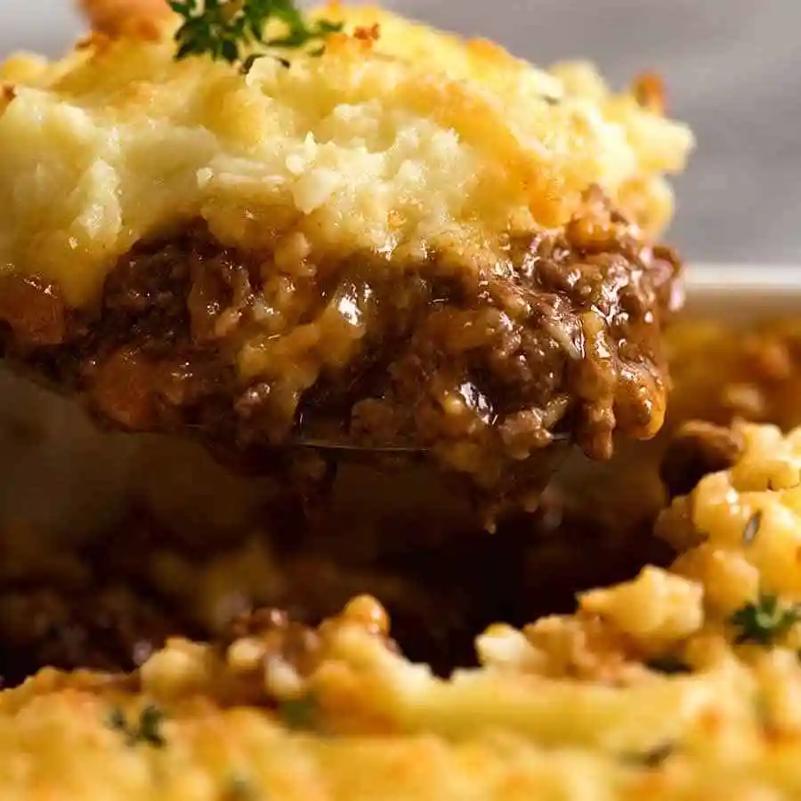

Cottage Pie

Description
Cottage Pie is a fabulous English classic, one that us Aussies have adopted as one of our beloved winter favorites! Or in my case, all-year-round-favourite
Easy to make, economical, every day ingredients and 100% freezer friendly, it’s the sort of food that has universal appeal.
Ingredients
- 1 1/2 tbsp olive oil
- 2 garlic cloves , minced
- 1 onion , finely chopped
- 1 carrot , finely chopped
- 1 celery , finely chopped
- 1.5 lb beef mince (ground beef)
- 1/4 cup (40g) flour
- 1/4 cup (55g) tomato paste
- 2 cups (500 ml) beef stock
- 1/2 cup (125 ml) red wine
- 1 beef bouillon cube
- 2 tbsp Worcestershire sauce
- 1 tsp dried thyme
- 2 dried bay leaves
- 3/4 tsp salt
- 1/2 tsp black pepper
Steps
- Heat oil in a large skillet over medium high heat. Add onion and garlic, cook for 1 minute. Then add carrots and celery. Cook for 3 minutes or until softened and sweet.
- Turn heat up to high. Add beef and cook, breaking it up as you go, until browned.
- Add flour and mix in. Add tomato paste, broth, red wine, bouillon cube, Worcestershire sauce, thyme, bay leaves, salt and pepper.
- Bring to simmer, then turn down heat so it is simmering rapidly - I have it on medium high. Cook for 30 minutes, stirring occasionally, until it reduces down to a gravy consistency. Taste then add more salt if desired.
- Transfer to 6 cup pie dish (1.5 litre / quart). Cover, cool if you have time (even overnight). Cool filling = easier to top with mash.
- Preheat oven to 180°C/350°F.
- Cook potatoes in boiling water for 15 minutes or until soft. Drain then return to pot on turned off stove. Shake briefly and allow to steam dry for 30 seconds or so.
- Add butter and mash until melted, then add milk and salt. Mash until smooth.
- Spread onto pie, use a fork to rough up the surface (rougher surface = more golden bits). Sprinkle with paremsan, drizzle with butter (or skip this and just drizzle with olive oil)
- Bake for 25 - 30 minutes or until golden on top and bubbling on the edges. Stick a knife into the middle to ensure it is piping hot.
- Stand for 5 minutes before serving, garnished with fresh thyme leaves if desired.